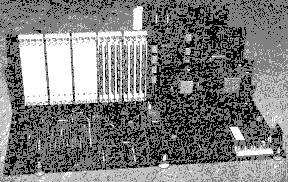

Previous
Next
TOC
Eagle - der erste Atari TT030 Clone
Der GE Soft Eagle war 1993 der erste Atari TT030 Clone, dem aber
kein langes Leben nach der Geburt beschieden war. Ausgeliefert wur-
den nur wenige Hauptplatinen und die auch nur mit der 68030 CPU
Prozessorkarte. Der CPU Takt beträgt 33MHz für die MC68030 CPU und
die MC68882 FPU beide in PGA Version auf der Prozessorkarte sitzend.
Der Eagle Channel besteht aus 8 Sockeln und war ursprünglich dafür
ausgelegt auch andere CPUs aufnehmen zu können. Die Speicherkarte
kann bis zu 12 Megabyte ST-RAM kompatiblen Speicher aufnehmen und
zusätzlich mit bis zu 256 Megabyte TT-RAM bestückt werden, dazu sind
ingesamt 20 SIMMsockel in 30 Pin Ausführung auf der Platine vorhan-
den. Weiterhin gab es auch eine VME Bus Steckkarte für den Eagle um
eine ET-4000 kompatible Grafikkarte anzuschliessen. An Schnittstellen
hat(te) der Eagle alles zu bieten was auch ein Atari TT030 zu bieten
hat mit ausnahme des DMA-Soundsystemes. 1995 stellte die Firma
GE Soft dann den Geschäftsbetrieb mehr oder weniger ein.

Ein bischen zur Hardware des Eagle:
Die Bedeutung der 7 Jumper zwischen den Slots:
Es ist die XBG (-BusGrant) Daisy-Chain, etwa nach VME Bus Vorbild.
Aber doch unvollkommen, da der untere Slot, der die höchste Priorität
hat, Pin D10 (XBG-IN) nicht auf Masse gelegt hat. Aber die 68030 CPU
Karte wertet XBG-IN sowieso nicht aus.
Weiter ist bekannt daß die Slots, die natürlich prinzipiell alle
unterschiedlich sind, was Arbitrierung angeht, in 2 Gruppen geteilt
sind: 1 bis 4 sind logisch vor der DMA Logik angeordnet und die Slots
4 bis 8 dahinter. Diese haben also niedrigere Prioritäten in der
Arbitrierung. Die 68030 CPU Karte kann nur auf Slot 1 bis 4 betrieben
werden, auch wenn zumindest noch der Festplattentreiber geladen
werden kann wenn die CPU Karte im Slot 5 sitzt. Die Ram Karte und der
VME Adapter brücken XBG-IN und XBG-OUT übrigens nicht. Der Jumper
unter ihren Slots sollte/muß gesteckt sein, wenn sie zwischen 2
Mastern sitzen. Generell sollten wohl alle 7 BG-Jumper gesteckt sein.
Kapitel Eagle - der erste Atari TT030 Clone, Seite 1